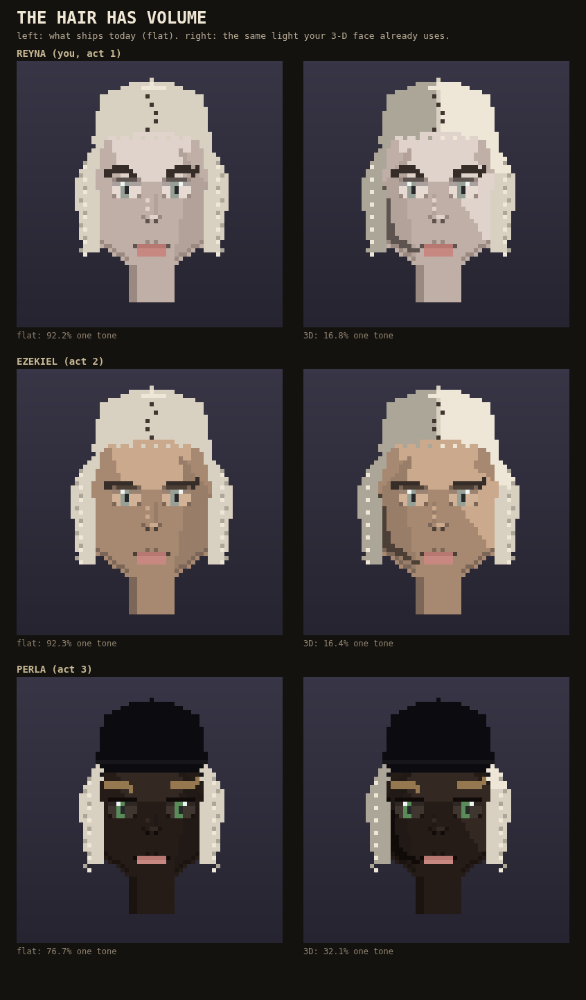

Your own school round found a second thing wrong with faces that THE LIGHT fix did not touch: the hair is one flat color. On twenty of your crowd, 85% of every hairstyle's own pixels were the exact same single tone -- a colored cap, not hair with any shape to it.
Here are the same three people from the 3-D card -- you, Ezekiel, Perla -- shown with today's flat hair next to the same light your 3-D face attempt already uses: brighter on the lit side, darker on the far side, same direction as the face. On the same twenty crowd faces, the one-flat-tone share drops from 85.1% to 20.6%.
This rides the same opts.threeD flag [three d look] already built, so it only ever does anything if that flag is on. Nothing here has shipped; your own face on the play surface has not moved.

Thumbs up moves it into the game. Thumbs down and it goes to the graveyard with what to try differently.